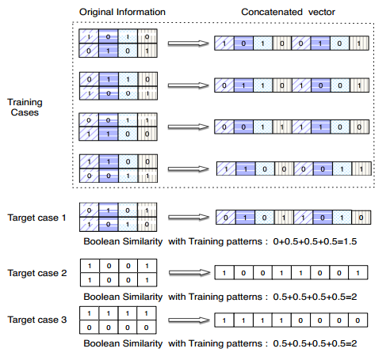
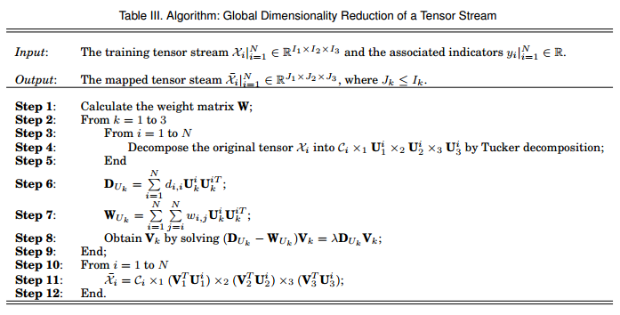

本文先简单归纳《A Tensor-Based Information Framework for Predicting the Stock Market 》中介绍的一种探索多维数组（张量）表征多因子并计算不同因子抽象关系并降低维度的方法，然后归纳《Tensor Learning for Regression 》中介绍的Tesnor Ridge Regression算法，通过CP分解张量降低需要估计回归系数（因子收益率）的数量。
股票趋势受各种高度相关信息的强烈影响，这通常涵盖经济学、政治学和心理学等多方面研究。传统的有效市场假说（EMH）指出，股价总是由“理性”的投资者驱动，股价等于公司预期未来现金流的理性现值。与市场有关的新信息可能会改变投资者的期望，并导致股价波动，这种对信息反应的分歧导致股价的实际价格与内在价值之间的差异。竞争市场参与者导致股价波动周围的股价内在价值，即新信息对股价产生复杂的影响。然而，股价并不严格遵循随机游走，行为金融研究将股票趋势的非随机性归结为投资者由于认知和情绪偏见的对不利消息的过度反应。虽然传统金融和行为金融均认为新的信息对股票趋势产生复杂影响。
A股市场刨除内幕等操作方法为，一般分为基本面分析和技术分析两类。基本面分析通常通过构建经济、商业和市场行业等多信息源的数据与股票未来走势之间的关系来预测股票趋势，即国家整体经济，行业条件，公司的财务状况和管理层能力等因素，可以深度拆解股价未来走势。技术分析通过历史股票趋势预测股价未来走势，技术分析流派认为股价市场是周期性或者类周期性的，并且具有特定的模式，这些模式随着时间的推移而重复出现。
受到移动互联网的影响，股票信息迅速更新并以前所未有的速度传播，并且通常在正式统计报告之前向投资者对投资者产生影响。用户参与社交媒体（包括评论，评分和投票）的变化可以更快速地互动交换信息。这种情况可能导致群体投资行为，因为投资者的决策倾向于受同行的情绪影响。目前常见的做法是使用NLP量化新闻和社交网络的新信息提供定性信息，如舆情指数。影响股票趋势的信息是多方面的且互相影响的，反映到因子数据方面就是存在多重共线性。
传统的线性回归将多个信息源（模式）的特征（无量纲因子）连接到一个复合特征的向量中处理。由于维度灾难和多重共线性，这种做法限制了多因子模型囊括因子数量。此外使用马赛克拼接(mosaic approach)通常包含各种信息源的混合和交互，但级联向量假设每个信息膜是是相互独立的。如下图这里，矩阵用于建模简化的投资信息源，其中每行代表一种信息模式，如企业信息、事件信息或情绪信息。根据马赛克拼接信息结构，特征模式可以存在于不同信息源（行）或不同模式之间。

如图右所示，删除马赛克信息结构并将各种信息模式的特征连接成一个复合特征向量，级联向量方法忽略了各种信息模式之间的固有链路导致明显的相似性的出现。除了在一个信息矩阵中捕获各种模式之间的这些静态互连之外，重要的是在一系列信息矩阵之间识别和强调各种模式之间的动态连接。例如，在不同时间发布的两篇新闻文章可能是文本上不相似的，但两者可能包含有关相同股价的有利信息。此外，在这两个时间点的相应的企业特定数据可能相似，可能表明良好的投资机会。在这种情况下，可以通过相应的基本面数据的相似性来增强不同文本信息处理、舆情指数相似性。捕捉，推论和加强各种信息模式之间的动态关系将有利于提高对股票趋势的预测能力。
此文中应用基于张量的信息框架来捕捉新信息与股票走势之间的非线性关系。该框架使用全局维数降低算法和基于张量的回归获取多信息源之前的非线性关系，并研究这些信息源对股票趋势的影响。影响股票走势的各种信息因素，在过去已被广泛研究。 传统金融主要集中在企业特定因素的长期影响上，而现代行为金融主要集中在公众情绪和当前事件造成的短期影响。此文试图通过建立多维度模型处理各种信息源对股票趋势的共同影响。这里将信息按照信息源分成三类：(a) 企业特定模型信息模式：主要指企业的基本面和量价因子；(b) 事件特定模式：主要指新闻资讯对股价走势的影响，受新信息的影响，股票投资者不断更新他们公司经营情况等基本面及股价走势的看法或非理性投资者的情绪。具体来说，可以对相关新闻文章使用词向量表示，其中每个条目是名词和情感词的加权。(c) 情绪特定模式：发达的社交媒体使一部分投资者潜意识群体和情绪的影响，这可能导致投资者的群体性行为。

可以使用张量处理多信息源信息的相互关联特性，这里使用三阶张量表示三种不同的信息模式。将三种不同信息源的信息（因子）填入张量不同维度（形成一个稀疏张量），如下图，应用张量分解和重构来降低维度，加强不同信息模式的内在联系。通过使用张量分解子空间中的因子矩阵来实现从张量序列的几何结构中识别出几个信息源之间的深层关联。使用\(Tucker\)分解因子张量\(\mathcal{X}_i = \mathcal{C}_i \times_1 U^{i_1} \times_2 U^{i}_2 \times_3U^{i}_3\) 使用GDR算法计算因子矩阵修正矩阵并重新合成信息因子张量\(\bar{\mathcal{X}_i} = \mathcal{C}_i \times_1(V^T_1 U^{i_1}) \times_2 (V^T_2 U^{i}_2) \times_3(V^T_3U^{i}_3)\) 。这样多信息源的原始因子稀疏张量转化为低维度的密集因子张量。\(\mathcal{X}\in\mathbb{R}^{I_1 \times I_2 \times I_3} \to \bar{\mathcal{X}} \in \mathbb{R}^{J_1 \times J_2 \times J_3}\)

尽管通过前述步骤分解-重构技术可以大大压缩稀疏的因子张量的体积规模，然而使用传统的方法如张量向量化估计张量回归权重系数依然具有较大的难度。例如对形状为[30, 30, 10]因子张量进行回归，张量向量化的处理方法导致权重系数张量需要估计\(30 \times 30 \times 10 = 9000\) 个权重参数（标量），对于传统多因子模型这显然是不实用。可以通过使用张量分解的方法（如CP分解）大幅度降低所需估计的权重系数的数量，从而将张量回归方法嵌入传统多因子体系中。例如在《Tensor Learning for Regression 》介绍的tensor ridge regression。对上面的假设，使用CP分解权重张量之后，例如分解为4个坐标基（秩一张量）累加和则只需要估计\((30 + 30 +10) \times 4 =280\) 个权重参数。
\[\begin{equation} \begin{aligned} y_i &= \left<\mathcal{X},\mathcal{W} \right > + b\\ &=\left< \mathcal{X}, \sum\limits^R_{r=1} u^{(1)}_r \circ u^{(2)}_r \circ \cdots \circ u^{(M)}_r \right> + b\\ &=\sum\limits^R_{r=1} \left< \mathcal{X}, u^{(1)}_r \circ u^{(2)}_r \circ \cdots \circ u^{(M)}_r \right> + b\\ &=\sum \limits ^{R} _{r=1} \mathcal{X} \prod^{M_{k=1}} \times_k u^{(k)}_r \end{aligned} \end{equation}\]
对一组给定的有标签训练集\(\{\mathcal{X}_i ,y_i \}^N_{i=1}\) 其中\(\mathcal{X}_i = \mathbb{R}^{I_1 \times \cdots I_M}\) 为\(M-mode\) 张量，\(y_i\) 为对应的标量标签。评估权重参数的目标函数可以写作
\[\mathcal{L} (\mathcal{W},b) = \frac{1}{2} \sum\limits^{N}_{i=1} l(y_i, f(\mathcal{X}_i, \Theta)) + \frac{1}{2} \psi(\Theta)\]
\(l(\cdot)\) 偏差损失函数，\(\psi (\cdot)\) 惩罚函数。当使用响应变量和标签差最小平方和作为损失函数的时候就是张量形式的最小二乘估计，添加2范数作为惩罚函数便得到张量形式的岭回归。在不使用惩罚项修正权重参数的时候，即张量形式的最小二乘回归中偏置\(b\) 直接使用上式得出，在使用\(L2-norm\) 修正权重参数的时候由于偏置权重参数同时被修正，这导致常数偏置项的错误。所以TRR的常数偏置应该使用无偏置回归的残差平均值获得，也就是使用无偏置回归模型的残差平均值计算偏置，但哑变量表示的行业收益率可以直接计算。
附录
1、向量-线性回归
1.1、符号
\(x\) 列向量
\(x^T\) 行向量
\(X\) 矩阵
\(I\) 单位矩阵
\(\mathcal{X}\) 张量
\(||\cdot||_2\) L2范数
1.2、Least Squares Regression
传统线性回归模型可以写作：
\(y = f(X) + \varepsilon\)
使用线性模型拟合得到的估计值模型为:
\(\hat{ y} = f(X) = X \beta = \beta_0 1 + \beta_1 x_1 +\cdots + \beta_k x_k\)
其中
\(y \in \mathbb{R}^n\)
\(X \in \mathbb{R}^{n \times (k +1)}\)
\(\varepsilon \in \mathbb{R}\)
\(\beta \in \mathbb{R}^{k+1}\)
注：下文\(k+1\)简写为\(k\)
使用最小二乘损失函数获取权重参数
\[\begin{equation} \begin{aligned} \mathcal{L} &=Loss\ Function \\ &=RSS(\beta) \\ &= ||y-X\beta||^2_2 \\ &= (y-X\beta)^T(y-X\beta)\\ &=y^T y -(X\beta)^Ty-y^TX\beta + (X\beta)^T(X\beta)\\ &=(X\beta)^T(X\beta) - 2(X\beta)^Ty + y^Ty\\ &=\beta^TX^TX\beta - 2 \beta^T X^T y + y^Ty \end{aligned} \end{equation}\]
其中 \(y^TX\beta = scalar = (X\beta )^Ty\)
令\(A = X^TX \in \mathbb{R}^{k\times k}\)
\(\frac{\partial{\beta^TX^TX\beta}}{\partial{\beta}}=\frac{\partial{\beta^TA\beta}}{\partial{\beta}}\\ = (A + A^T)\beta\\ = (X^TX + (X^TX)^T)\beta\\=2X^TX\beta\)
\(\frac{\partial{\beta^TX^Ty}}{\partial{\beta}} =\\\frac{\partial{\beta^T}}{\partial{\beta}}(X^Ty) + \beta^T \frac{\partial{X^Ty}}{\partial{y}}\\=I(X^Ty + \beta^T0)\\=X^Ty\)
\(\frac{\partial{\mathcal{L} }}{\partial{\beta}} = 2X^TX\beta - 2X^Ty\)
由于这是凸优化问题，令\(\frac{\partial{J}}{\partial{\beta}}=0\) ，则得到权重参数\(\beta\) 的估计值
\(\hat{\beta} = (X^TX)^{-1}X^Ty\)
最小二乘回归根据预测变量拟合响应变量为
\(\hat{y} = X\hat{\beta} = X (X^TX)^{-1}X^Ty\)
1.3、 Proof: \(\frac{\partial{\beta^TA\beta}}{\partial{\beta}} = (A + A^T)\beta\)
- 微分法
设\(u(\beta)=\beta^TA\beta, \ \ h=\Delta \beta\)
\[\begin{equation} \begin{aligned} u(\beta+h)&=(\beta+h)^TA(\beta+h)\\ &=\beta^TA\beta+h^TA\beta+\beta^TAh+h^TAh\\ &=u(\beta)+\beta^T(A+A^T)h+u(h) \\ &=u(\beta) + h^T(A+A^T)\beta +u(h) \end{aligned} \end{equation}\]
其中\(h^TA\beta= 1\times1 \ matrix= scalar=\beta^TA^Th\)
设\(r_\beta(h)=u(h)=h^TAh\) ，当\(h\to0\) 则\(r_\beta(h)=o(\|h\|)\) 这证明\(u\)在\(\beta\)处的微分是线性函数。则
\(\because \ u(\beta+\Delta \beta) - u(\beta)= h^T(A+A^T)\beta +u(h)\)
\(\therefore \ \nabla u(\beta) = I (A + A^T)\beta + o(\|h\|)\)
即 \(\frac{\partial{\beta^TA\beta}}{\partial{\beta}} = (A + A^T)\beta\)
- 元素法
设\(A\in \mathbb{R}^{k\times k}\) 即 \(A = [a_{i,j}]\) , \(\beta \in \mathbb{R}^k\)
\(u =\beta^T A \beta = \sum \limits ^k_{i=1} \sum \limits ^k_{j=1} a_{i,j} \beta_i \beta_j\)
根据元素对列向量求导规则
\(\frac{\partial{y_p}}{\partial{x}} = [\frac{\partial{y_p}}{\partial{x_1}}, \cdots ,\frac{\partial{y_p}}{\partial{x_k}}]^T\)
\[\begin{equation} \begin{aligned} \frac{\partial{u}}{\partial{\beta_p}}&=\frac{\sum\limits ^k_{i=1} \sum\limits^{k}_{j=1} \partial{a_{i,j}\beta_i \beta_j}}{\partial{\beta_p}}\\ &=\frac{\sum\limits ^k_{i=1, i\neq p} \sum\limits^{k}_{j=1} \partial{a_{i,j}\beta_i \beta_j}}{\partial{\beta_p}} + \frac{\sum\limits^{k}_{j=1} \partial{a_{p,j}\beta_p \beta_j}}{\partial{\beta_p}}\\ &=\frac{\sum\limits ^k_{i=1, i\neq p} \sum\limits^{k}_{j=1, j\neq p} \partial{a_{i,j}\beta_i \beta_j}}{\partial{\beta_p}} + \frac{\sum\limits ^k_{i=1, i\neq p} \partial{a_{i,p}\beta_i \beta_p}}{\partial{\beta_p}} + \frac{\sum\limits^{k}_{j=1,j\neq p} \partial{a_{p,j}\beta_p \beta_j}}{\partial{\beta_p}} + \frac{\partial{a_{p,p}\beta_p \beta_p}}{\partial{\beta_p}}\\ &=0 + \sum \limits ^{k}_{i=1,i\neq p} a_{i,p} \beta_i + \sum \limits ^k _{j=1, j\neq p} a_{p,j} \beta_j + 2a_{p,p}\beta_p \\ &= \sum \limits^k_{i=1}a_{i,p}\beta_i + \sum \limits^k_{j=1}a_{p,j}\beta_j \\ &= (\beta^TA)_p + (A\beta)_p\\ &=(A^T\beta)_p + (A\beta)_p \end{aligned} \end{equation}\]
其中\((\beta^TA)_p\) 是行向量\(\beta^TA\)的第\(p\)个分量,\((A\beta)_p\) 是列向量\(A\beta\)的第\(p\)的元素。
1.4、Ridge Regression
当输入因子共线性严重的时候适用岭回归，岭回归是对最小二乘回归的一种补充，它损失了无偏性，来换取高的数值稳定性，从而得到较高的计算精度。
在最小二乘回归中最小化损失函数
\(\mathcal{L} = \sum (y-(\beta_0 + \sum\limits^k_{i=1} \beta_i x_i))^2\)
求得\(\beta\) 权重系数。在岭回归中最小化目标函数则是
\(\mathcal{L} = \sum (y-(\beta_0 + \sum\limits^k_{i=1} \beta_i x_i))^2 + \alpha \sum \limits ^k_{i=1}\beta_i^2\)
通过添加对权重参数的2范数惩罚项，抑制\(\beta\)过大数值，即抑制响应变量对单个预测变量的敏感性。
\[\begin{equation} \begin{aligned} J^{ridge} &=RSS(\beta^{ridge}) \\ &= \min \limits_{\beta}\|y-X\beta\|^2 + \lambda\|W\|^2_2 \\ &=(y-X\beta)^T(y-X\beta) + \lambda \beta^T\beta\\ &=\beta^TX^TX\beta - 2 \beta^T X^T y + y^Ty + \lambda \beta^T\beta \end{aligned} \end{equation}\]
令\(\frac{\partial{J^{ridge}}}{\partial{\beta}} = 2X^TX\beta - 2X^Ty +2\lambda \beta=0\)
则\(\hat{\beta}^{ridge} = (X^TX + \lambda I)^{-1}X^Ty\)
对比 \(\hat{\beta}^{ols} = (X^TX)^{-1}X^Ty\)
对\(OLS\)当\(X\)不是列满秩（列满秩：因子矩阵列线性无关）或输入因子存在较强的多重共线性，\(X^TX\)的行列式接近于0，即\(X^TX\)接近奇异。计算\((X^TX)^{-1}\)误差较大。当\(X^TX\)的行列式接近于0时，ridge regression 将其主对角元素都加上一个\(\lambda\)数，可以降低矩阵奇异风险。当\(\lambda\)（收缩量或惩罚系数）增加时，偏差增加，方差减小。
常数项使用\(L2\)惩罚项将导致回归出现错误。将输入因子矩阵按列标准化之后，截距估计为\(\beta_0 = \bar{y}\) 。所以通常使用ridge regression 回归的时候先对输入因子矩阵\(X\) 标准化处理，并不包含截距（偏置）输入。对于分类独立预测变量（哑变量），\(ridge \ regression\) 和\(lass \ regression\) 同样有效。
岭回归通过对权重系数的大小施加惩罚来规范线性回归。权重系数朝着零向彼此收缩，但是，当这种情况发生时，如果预测变量没有相同的尺度，那么收缩是不公平的。两个具有不同尺度的预测变量将对惩罚项有不同的贡献，因为惩罚项是所有系数的平方和。为了避免这种问题，很多时候，独立变量的中心和缩放是为了具有方差1。但是二进制变量（哑变量）不一定代表高斯/正态分布。当将它们转换为“normal”值，其中mean = 0和std.dev = 1时，不会创建基本的正态分布，您可以应用可能不符合的假设。
2、张量-线性回归
2.1 符号
\(x_i\) 标量
\(x\) 列向量
\(x^T\) 行向量
\(X\) 矩阵
\(I\) 单位矩阵
张量 \(\mathcal{X} = \mathbb{R}^{I_1 \times \cdots I_M}\)
张量的d-mode矩阵 \(mat_d(\mathcal{X}) = X_{(d)} \in \mathbb{R}^{I_d \times (I_1 \cdots I_{d-1}I_{d+1}\cdots I_M)}\)
张量向量化\(vec(\mathcal{X})\)
2.2 Tensor Ridge Regression
矢量空间中的经典线性预测器由下式给出
- \(y_i = f(x) = \left< x,\beta \right> +b\)
这里是响应变量为标量的线性回归模型。将上述经典线性预测器从矢量空间扩展到张量空间
- \(y_i = f(\mathcal{X}) = \left<\mathcal{X},\mathcal{W}\right>+b\)
当使用张量向量化处理如 \(\left< vec(\mathcal{X}, vec(\mathcal{W})) \right>\)的时候上述两式完全相同，然而在向量预测器中对于多维度或者多信息源的预测变量将输入数据简单的拼接成向量，容易出现过拟合和高计算复杂度的问题。尽管可以通过使用无监督维度降低算法（如PCA）处理输入因子向量，但这通常导致难以建立明晰的预测变量对响应变量的解释。这里使用张量CP分解方法，通过将权重参数张量\(\mathcal{W}\)的分解为多个秩一张量相加来执行特征选择或权重系数的维数降低并同时捕获多维度预测变量之间的深层抽象关系。通过对权重张量的CP分解可以线性预测器可以改写为：
\[\begin{equation} \begin{aligned} y_i &= \left<\mathcal{X},\mathcal{W} \right > + b\\ &=\left< \mathcal{X}, \sum\limits^R_{r=1} u^{(1)}_r \circ u^{(2)}_r \circ \cdots \circ u^{(M)}_r \right> + b\\ &=\sum\limits^R_{r=1} \left< \mathcal{X}, u^{(1)}_r \circ u^{(2)}_r \circ \cdots \circ u^{(M)}_r \right> + b\\ &=\sum\limits^R_{r=1} \left< \mathcal{X}, \mathcal{U}_r \right> +b \end{aligned} \end{equation}\]
这里使用CP分解将权重参数张量\(\mathcal{W}\)分解为R个秩一张量\(\mathcal{U}_r\)，如果将这R个秩一张量看做一组坐标基，则每个秩一张量都可以视为一个坐标基（如右手坐标系的一个维度），这样对R个秩一张量的累加和就可以看做类比于空间几何投影概念，也就是样本张量\(\mathcal{X}\) 投影到具有R个坐标基的空间中。类似于\(PCA\) ，使用多个投影的减少沿着一个方向进行投影时发生的信息丢失。
这种方法可以有效降低估计权重参数数量， 例如输入预测变量为的形状设定为[30, 30, 10]的形状，则对应的权重张量需要估计\(30 \times 30 \times 10 = 9000\) 个权重参数（标量），使用CP分解权重张量之后，例如分解为4个坐标基（秩一张量）累加和则只需要估计\((30 + 30 +10) \times 4 =280\) 个权重参数。
2.3 内积 Inner Product
向量\(x,w \in \mathbb{R}^N\)
- \(\left< x, w\right> = \sum\limits^N_{i=1}x_iw_i=x^Tw\)
矩阵 \(X,W \in \mathbb{R}^{m,n}\)
- \(\left<X,W \right>\\=\sum\limits^{m}_{i=1}\sum\limits^{n}_{j=1}x_{i,j}w_{i,j} \\= vec(X)^Tvec(W) \\= vec(W)^Tvec(X)\\=\left<vec(X),vec(W)\right>\)
张量\(\mathcal{X}, \mathcal{W} \in \mathbb{R}^{I_1 \times \cdots \times I_M}\)
- \(\left< \mathcal{X},\mathcal{W} \right>\\ = \sum\limits^{I_1} _{i_1=1}\cdots\sum\limits^{I_M}_{i_M=1}x_{i_1,\cdots,i_M}w_{i_1,\cdots,i_M}\\=vec(\mathcal{X})^Tvec(\mathcal(W)\\=\left<vec(\mathcal{X},\mathcal{W}) \right>\)
根据元素计算可得
- \(\left< vec(\mathcal{X}), vec(\mathcal{W})\right> =\left<X_{(d)}, W_{(d)}\right> = \left< \mathcal{X},\mathcal{W} \right>\)
2.4 矩阵内积与迹运算
设\(A=(a_{ij})\in\mathbb{R}^{m,n}\) ，\(B=(b_{ij})\in\mathbb{R}^{m,n}\) ，\(C=B^TA=(c_{ij})\in\mathbb{R}^{n,n}\) 。
- \((c)_{ij}=\sum_{k=1}^m b_{ki}a_{kj}\)
- \(\mathrm{tr}(B^TA)=\sum_{i=1}^n c_{ii}=\sum_{i=1}^n\sum_{k=1}^m b_{ki}a_{ki}\)
则\(\mathrm{tr}(B^TA) = \left<A,B\right>= \text{tr}((B^TA)^T)=\text{tr}(A^TB)\)
设\(A=(a_{ij})\in\mathbb{R}^{m,n}\) ，\(B=(b_{ij})\in\mathbb{R}^{m,n}\) ，\(C=AB^T=(c_{ij})\in\mathbb{R}^{m,m}\) 。
- \((c)_{ij}=\sum\limits_{k=1}^n b_{ki}a_{kj}\)
- \(\mathrm{tr}(AB^T)=\sum\limits_{i=1}^m c_{ii}=\sum\limits_{i=1}^m\sum\limits_{k=1}^n b_{ki}a_{ki}\)
则\(\langle A,B\rangle = \mathrm{tr}(B^TA) = \text{tr}((B^TA)^T)=\text{tr}(A^TB)\\= \mathrm{tr}(AB^T) = \text{tr}((AB^T)^T)=\text{tr}(AB^T)\)
2.5 Frobenius norm
- \(\| A\| = \sqrt{\sum\limits^m_{i=1} \sum\limits^m_{j=1}\| a_{i,j}\|^2}\)
- \(\| A\|^2 = \sum\limits^m_{i=1} \sum\limits^m_{j=1}\| a_{i,j}\|^2= \left<A,A\right> = trace(AA^T)\)
2.6 CP分解
canonical polyadic decomposition

- \(\mathcal{W}\\ \approx [[ U^{(1)}, U^{(2)},\cdots U^{(M)}]] \\ \triangleq \sum\limits^R_{r=1} u^{(1)}_r \circ u^{(2)}_r \circ \cdots \circ u^{(M)}_r\)
其中 \(U^{(K)} = [u^{(k)}_1, \cdots, u^{(k)}_r ]\) 对张量 \(\mathcal{W}\) 的 \(mode-d\)展开矩阵 \(W_{(d)}\)，CP分解转换为：
- \(W_{(d)}=U^{(d)} U^{(-d)T}\)
其中
- \(U^{(d)} \in \mathbb{R}^{I_d\times R}\)
- \(U^{(-d)} \in \mathbb{R}^{(I_1 \cdots\ I_{d-1} I_{d+1}\cdots I_{M}) \times R}=\mathbb{R}^{S \times R}\)
- \(U^{(-k)} = (U^{M}\odot \cdots \odot U^{(d+1)}\odot U^{(d-1)}\odot\cdots \odot U^{(1)})\)
2.7 TRR目标函数
对一组给定的有标签训练集\(\{ \mathcal{X}_i ,y_i \}^N_{i=1}\) 其中\(\mathcal{X}_i = \mathbb{R}^{I_1 \times \cdots I_M}\) 为\(M-mode\) 张量，\(y_i\) 为对应的标量标签。评估权重参数的目标函数可以写作
- \(\mathcal{L} (\mathcal{W},b) = \frac{1}{2} \sum\limits^{N}_{i=1} l(y_i, f(\mathcal{X}_i, \Theta)) + \frac{1}{2} \psi(\Theta)\)
\(l(\cdot)\) 偏差损失函数，\(\psi (\cdot)\) 惩罚函数。当使用响应变量和标签差最小平方和作为损失函数的时候就是张量形式的最小二乘估计，添加2范数作为惩罚函数便得到张量形式的岭回归。
使用CP分解将权重参数张量转换为一组矩阵
- \(\mathcal{W} \approx [[ U^{(1)}, U^{(2)},\cdots U^{(M)}]]\)
则目标函数转换为
\[\begin{equation} \begin{aligned} \mathcal{L} (\mathcal{W},b) &= \mathcal{L} (\{U^{(1)},\cdots,U^{(M)} \},b)+ \Phi(\mathcal{W})\\ &=\frac{1}{2} \sum\limits^N_{i=1}(y_i - \left<\mathcal{X}_i,[[U^{(1)},\cdots,U^{(M)}]] \right>-b)^2 + \frac{\lambda}{2}\| [[U^{(1)},\cdots,U^{(M)}]] \|^2_{Fro} \end{aligned} \end{equation}\]
使用坐标下降法最小化这个目标函数，在每次迭代中，固定除了\(U^{(j)}\) 之外的其他权重矩阵，解决相对于权重参数矩阵集的一个子集\(U^{(j)}\)的凸优化问题。在每次迭代中，求解与模式投影相关联的权重张量分解参数矩阵\(U^{(j)}\)，同时保持其它模式的投影对应的参数矩阵\(\{ U^{(k)}\}|^M_{k=1,k\neq j}\)固定。也就是在每迭代步最小化如下子目标函数：
\[\begin{equation} \begin{aligned} \mathcal{L}_{d} (U^{(d)},b) &=l_d(U^{(d)},b) + \Phi_d(U^{(d)})\\ &=\frac{1}{2} \sum\limits^N_{i=1}(y_i - \left< X_{i(d)},W_{(d)} \right>-b)^2 +\frac{\lambda}{2}\| W_{(d)} \|^2_{Fro} \\ &=\frac{1}{2} \sum\limits^N_{i=1}(y_i - \left<X_{i(d)},U^{(d)} U^{(-d)T}\right>-b)^2 + \frac{\lambda}{2}\left<U^{(d)}U^{(-d)T}, U^{(d)}U^{(-d)T} \right>\\ &=\frac{1}{2} \sum\limits^N_{i=1}(y_i - \left<U^{(d)} U^{(-d)T},X_{i(d)}\right>-b)^2 + \frac{\lambda}{2}\left<U^{(d)}U^{(-d)T}, U^{(d)}U^{(-d)T} \right> \\ &=\frac{1}{2} \sum\limits^N_{i=1}(y_i - \text{Tr}(U^{(d)} U^{(-d)T}X_{i(d)}^T)-b)^2 + \frac{\lambda}{2}\text{Tr}(U^{(d)}U^{(-d)T}U^{(-d)}U^{(d)T} ) \end{aligned} \end{equation}\]
其中权重参数张量和CP分解矩阵关系为 \(W_{(d)}=U^{(d)} U^{(-d)T}\)
将\(\mathcal{L}\) 中的 \(L2-norm\) 范数惩罚项按\(mode-d\) 模式矩阵拆分，即将
- \(\Phi(\mathcal{W})=\frac{\lambda}{2}\| [[U^{(1)},\cdots,U^{(M)}]] \|^2_{Fro}\)
修改为
- \(\Phi(\mathcal{W})=\frac{\lambda}{2}\sum\limits^M_{d=1} \|U^{(d)}\|^2 _{Fro}\)
- \(\frac{\lambda}{2} \|U^{(d)}\|^2 _{Fro}=\frac{\lambda}{2}\|vec(U^{(d)})\|^2\)
则
\[\begin{equation} \begin{aligned} \mathcal{L}_{d} (U^{(d)},b) &= \frac{1}{2} \sum\limits^N_{i=1}(y_i - \text{Tr}(U^{(d)} \tilde{X}_{i(d)}^T)-b)^2 + \frac{\lambda}{2} \|U^{(d)}\|^2 _{Fro}\\ &= \frac{1}{2} \sum\limits^N_{i=1}(y_i - vec(\tilde{X}_{i(d)})^Tvec(U^{(d)}) -b)^2+\frac{\lambda}{2}\|vec(U^{(d)})\|^2 \\ &=\frac{1}{2} \| y-[vec(\tilde{X}_{1(d)}),\cdots,vec(\tilde{X}_{N(d)} )]^T vec(U^{(d)})-N*b\|^2+\frac{\lambda}{2}\|vec(U^{(d)})\|^2\\ &=\frac{1}{2} \| y-[b,vec(\tilde{X}_{1(d)}),\cdots,vec(\tilde{X}_{N(d)} )]^T [1,vec(U^{(d)})^T]^T\|^2+\frac{\lambda}{2}\|vec(U^{(d)})\|^2\\ &=\frac{1}{2} \| y-\Phi\hat\beta^{(d)}\|^2+\frac{\lambda}{2}\|\hat\beta^{(d)}\|^2 \end{aligned} \end{equation}\]
注：为了获得目标函数坐标下降法的封闭解，这里添加了对常数偏置项的惩罚，这样获得的偏置系数估计是不准确的，在使用的时候需要额外的处理。其中
\(\Phi= [vec(\tilde{X}_{1(d)}),\cdots,vec(\tilde{X}_{N(d)} )]^T\in\mathbb{R}^{N \times I_dR }\)
\(\hat\beta^{(d)}= [1,vec(U^{(d)})^T]^T \in \mathbb{R}^{I_dR+1}\)
\(U^{(d)} \in \mathbb{R}^{I_d \times R}\)
\(U^{(-d)} \in \mathbb{R}^{S_d \times R}\)
\(X_{i(d)}U^{(-d)} \in \mathbb{R}^{I_d \times S_d}\)
\(\tilde{X}_{i(d)} = X_{i(d)}U^{(-d)} \in \mathbb{R}^{I_d \times R}\)
这样关于权重参数张量的对其使用CP分解的矩阵的目标函数就转换为标准的岭回归问题了，则
- \(\hat\beta^{(d)} = (\Phi^T \Phi + \lambda I)^{-1} \Phi^{T}y\)
- \(U^{(d)} = reshape (\hat\beta^{(d)},[-1, R])\)
- 使用\([[ U^{(1)}, U^{(2)},\cdots U^{(M)}]]\)重构\(\mathcal{W}\)
在不使用惩罚项修正权重参数的时候，即张量形式的最小二乘回归中偏置\(b\) 直接使用上式得出，在使用\(L2-norm\) 修正权重参数的时候由于偏置权重参数同时被修正，这导致常数偏置项的错误。所以TRR的常数偏置应该使用无偏置回归的残差平均值获得，也就是使用无偏置回归模型的残差平均值计算偏置，即：
- \(b = \frac{1}{N} (y_i - \langle \mathcal{X},\mathcal{W} \rangle )\)
3、Global Dimensionality Reduction
3.1 符号
\(x_i\) 标量
\(x\) 列向量
\(x^T\) 行向量
\(X\) 矩阵
\(I\) 单位矩阵
张量 \(\mathcal{X}\in \mathbb{R}^{I_1 \times I_2 \times I_3 }\)
3.2 Tensor Transformation
Tucker Decomposition
- \(\mathcal{X}_i = \mathcal{C}_i \times_1 U^{i}_1 \times_2 U^{i}_2 \times U^i_3\)
其中
\(\mathcal{X}_i \in \mathbb{R}^{I_1 \times I_2 \times I_3 }\)
\(\mathcal{C}_i \in \mathbb{R}^{J_1 \times J_2 \times J_3 }\)
\(U_k^{i} \in \mathbb{R}^{I_k\times R_k }\)
并假设每个因子矩阵\(U^i_k\)描述一个信息源或信息模式，如企业特定、事件特定和情绪特定。核心张量\(\mathcal{C}_1\)表示由张量\(\mathcal{X}_i\)三中模型之间的相关程度。在Tucker 分解之后，最小化如下目标函数获得用于修正\(U^i_k\)相关矩阵\(V_k \in \mathbb{R}^{I_k \times J_k}\)
- \(\min \limits _{V_k} J(V_k) = \frac{\sum\limits^N_{i=1}\sum\limits^N_{j=i}\|V_k^TU^i_k - V^T_kU^j_k \|^2w_{i,j}}{\sum\limits^{N}_{i=1}\| V^T_kU^i_K\|^2d_{i,i}}\)
其中 \(W\)是一个加权的上三角矩阵，捕获张量序列\(\mathcal{X}_i\)的多维关联，其中元素\(w_{i,j}\)表征两个相似收益率模式的训练集：
- \(w_{i,j} = \begin{cases}1,\ if\ \ i \le j \ and \ \|y_i -y_j \| \le 5\% \\0, \ otherwise \end{cases}\)
在Tucker分解中，因子矩阵\(U^i_k\)仅保留张量\(\mathcal{X_i}\)内的各种信息模式之间的固有关联。 为了捕获各种模式间的动态关系，对目标函数\(J(V_k)\)进行优化，以确定校正因子\(V_k\)以调整\(U_i^k|^N_{i=1}\)。目标函数试图降低相似收益率的因子张量的\(mode\ k\) 因子矩阵差异，同时最大程度保留\(mode\ k\) 因子矩阵的原始信息。\(\|V_k^TU^i_k - V^T_kU^j_k \|^2w_{i,j}\) 通过最小化具最大相似程度(95%)因子矩阵\(U^i_k\) 和\(U^j_k\) 的获得修正张量分解因子矩阵的修正矩阵\(V_k^T\)。使用\(w_{i,j}\) 定义收益率相似股票\(y_i\) 和 \(y_j\)之间的差异来决断因子矩阵\(U^i_k\) 和\(U^j_k\) 之间的差异。为了避免过度修正特性模式因子矩阵\(U_k^i\) 这里最大化因子矩阵的方差。
- \(var(x) = \sum (x_i -\mu)^2 p_i\)
- \(\mu = \sum x_i p_i\)
可以使用图谱论(Spectral Graph Theory) 从对角矩阵\(D\)估计概率\(p_i\) 最大化方差可以进行如下改写，即目标函数的分母。
- \(var(V^T_kU_k)= \sum\limits^{N}_{i=1}\| V^T_kU^i_K\|^2d_{i,i}\)
假设\(V^T_ k U_k\)是张量子空间中的一个均值为0随机变量矩阵，令\(A^i = V^T_k U_k^i\) 则信息模式\(mode \ k\)的目标函数改写为：
\[\begin{equation} \begin{aligned} J(V_k) &= \frac{\sum\limits^N_{i=1}\sum\limits^N_{j=i}\|A^i - A^j \|^2 w_{i,j}}{\sum\limits ^{N}_{i=1} \|A^i \|^2d_{i,i}}\\ &=\frac{\sum\limits^N_{i=1}\sum\limits^N_{j=i}trace((A^i - A^j)(A^i -A^j)^T) w_{i,j}}{\sum\limits ^{N}_{i=1} trace(A^i A^{iT})d_{i,i}}\\ &=\frac{\sum\limits^N_{i=1}\sum\limits^N_{j=i}trace(A^iA^{iT}+A^jA^{jT}-A^iA^{jT}-A^jA^{iT} )w_{i,j}}{\sum\limits ^{N}_{i=1} trace(A^i A^{iT})d_{i,i}}\\ &=\frac{trace(\sum\limits^N_{i=1}A^iA^{iT}d_{i,i} - \sum\limits^N_{i=1}\sum\limits^N_{j=1}A^iA^{jT}w_{i,j})}{trace(\sum\limits^N_{i}AA^{iT}d_{i,i})} \end{aligned} \end{equation}\]
其中\(\| A\|^2 = \sum\limits^m_{i=1} \sum\limits^m_{j=1}\| a_{i,j}\|^2= \left<A,A\right> = trace(AA^T)\)
令
- \(D_U = \sum\limits ^N_{i=1}d_{i,i}U^{i}U^{iT}\)
- \(W_U = \sum\limits^N_{i=1}\sum\limits^N_{j=i}w_{i,j}U^iU^{jT}\)
则目标函数可以改写为：
\[\begin{equation} \begin{aligned} J(V_k)&=\frac{trace(\sum\limits^N_{i=1}A^iA^{iT}d_{i,i} - \sum\limits^N_{i=1}\sum\limits^N_{j=1}A^iA^{jT}w_{i,j})}{trace(\sum\limits^N_{i}AA^{iT}d_{i,i})}\\ &= \frac{trace(\sum\limits^N_{i=1}V^T_kU^iU^{iT}V_kd_{i.i} - \sum\limits^N_{i=1}\sum\limits^N_{j=i}V^T_kU^{i}U^{jT}V_kw_{i,j})}{trace(\sum\limits^N_{i}V^T_kU^iU^{iT}V_kd_{i,i})}\\ &=\frac{trace(V^T_k(\sum\limits^N_{i=1}d_{i,i}U^iU^{iT})V_k - V^T_k(\sum\limits^N_{i=1}\sum\limits^N_{j=1}w_{i,j}U^iU^{j,T})V_k)}{trace(V^T_k(\sum\limits^N_i d_{i,i} U^i U^{iT})V_k)}\\ &=\frac{trace (V^T_kD_UV_k-V^T_kW_UV_k)}{trace(V_k^TD_UV_k)} \end{aligned} \end{equation}\]
添加约束条件 \(trace(V^TD_UV)=1\) 获得目标函数的唯一优化结果，这是获取因子矩阵对应的修正矩阵的优化问题转化为：
- \(min\ J(V) = trace(V^TD_UV-V^TW_UV)\)
- \(s.t. \ trace(V^TD_UV)=1\)
通过如下算法即可获得修正矩阵，通过使用Tucker分解和修正矩阵将原始输入因子矩阵体积进行压缩
\(\mathcal{X}\in\mathbb{R}^{I_1 \times I_2 \times I_3} \to \bar{\mathcal{X}} \in \mathbb{R}^{J_1 \times J_2 \times J_3}\)
\(\bar{\mathcal{X}_i} = \mathcal{C}_i \times_1 (V^T_1U^i_1) \times_2 (V^T_2U^i_2) \times_3 (V^T_3U^i_3)\)

3.3 \(\sum\) 循环向量化
\(U^i_k\in\mathbb{R}^{batch \times I_k \times J_k}\)
\(U^{iT}_k\in\mathbb{R}^{batch \times J_k \times I_k}\)
\(M^i_k = U^i_k U^{iT}_k\in \mathbb{R}^{batch \times I_k \times I_k}\)
\(M^i_{k(0)} \in \mathbb{R}^{batch \times I_kI_k}\)
令 \(N = batch\)
- \(D_{U_k} = \sum\limits ^N_{i=1}d_{i,i}U^{i}_kU^{iT}_k \\=\sum\limits ^N_{i=1}d_{i,i}M^i_k\\= mat \{(vec(diag(D)))^T M_{k(0)}\}\)
- \(W_{U_k} = \sum\limits^N_{i=1}\sum\limits ^N_{j=1}w_{i,j}U^i_kU^{jT}_k\\= \sum\limits^N_{i=1}(\sum\limits ^N_{j=i}w_{i,j})U^i_kU^{jT}_k\\= \sum\limits^N_{i=1}(\sum\limits ^N_{j=i}w_{i,j})U^i_kU^{jT}_k\\=\sum\limits^N_{i=1}w_iU^i_kU^{jT}_k\\=\sum\limits^N_{i=1}w_i M^i_{k}\\=mat\{w M_{k(0)} \}\)
其中
- \(w_{i,j} = \begin{cases}1,\ if\ \ i \le j \ and \ \|y_i -y_j \| \le 5\% \\0, \ otherwise \end{cases}\)
- \(\sum\limits ^N_{j=1}w_{i,j} = w_i= sum(w_{i,:}, axis=1)\)
引用
Li X, Zhou H, Li L. Tucker tensor regression and neuroimaging analysis[J]. arXiv preprint arXiv:1304.5637, 2013.
Petersen K B, Pedersen M S. The matrix cookbook[J]. Technical University of Denmark, 2008, 7: 15.
Li Q, Jiang L L, Li P, et al. Tensor-Based Learning for Predicting Stock Movements[C]//AAAI. 2015: 1784-1790.
Kolda T G, Bader B W. Tensor decompositions and applications[J]. SIAM review, 2009, 51(3): 455-500.
Guo W, Kotsia I, Patras I. Tensor learning for regression[J]. IEEE Transactions on Image Processing, 2012, 21(2): 816-827.
Tibshirani R. Modern regression 1: Ridge regression[C]//Data Mining. 2013, 36: 462-662.
Figueiredo M A T. Lecture Notes on Linear Regression[J].
Nel D G. On matrix differentiation in statistics[J]. South African Statistical Journal, 1980, 14(2): 137-193.
Dullemond K, Peeters K. Introduction to Tensor calculus[J]. Kees Dullemond and Kasper Peeters, 1991.
Zhao Q, Caiafa C F, Mandic D P, et al. Higher order partial least squares (HOPLS): a generalized multilinear regression method[J]. IEEE transactions on pattern analysis and machine intelligence, 2013, 35(7): 1660-1673.
Li Q, Chen Y, Jiang L L, et al. A tensor-based information framework for predicting the stock market[J]. ACM Transactions on Information Systems (TOIS), 2016, 34(2): 11.